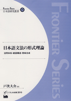

Site Map:
NLP Resources:
SNS:
Conferences/Workshops:
Links:
Books:
 | | 「数理論理学」 | | 戸次大介著 | | 東京大学出版会 | | 定価(税込)：￥3,150 (320頁) | | 第2刷正誤表 | |
|  | | 「日本語文法の形式理論 | | －活用体系・統語構造・意味合成－」 | | 戸次大介著 | | くろしお出版, 日本語研究叢書２４ | | 定価(税込)：￥4,410 (356頁) |
| | 講義名 | 数理基礎論 | | 開講期間 | 前期 | | 形式 | 講義 | | 単位数 | 2 | | 対象学年 | １年 | | 時間 | 月曜5,6限 | | 場所 | 理学部2号館507室 | | テーマ | 数理基礎論（記号論理学）は、数学・自然科学・情報科学等、様々な学問分野の基礎を支えている学問である。本講義では、初歩の段階から命題論理・述語論理について学習し、論理言語の構成や意味論的・公理論的推論の基本を理解することを目指す。 | | 教科書・参考書等 | 「数理論理学」戸次大介著 東京大学出版会 | | 成績 | 期末試験(40%)＋出席(60%)：毎回、出席チェックを兼ねて簡単な小テストを行います。出題内容については、前の回の授業で解説します。 | | 授業計画 |
授業計画
1. はじめに
2. 予備知識
2.1. ギリシャ文字
2.2. 集合と写像
3. 記号論理学とは何か
3.1. 数学における証明
3.2. 証明の妥当性とは何か
3.3. 記号論理学の目的と方法
3.4. 命題と真偽
3.5. 推論と妥当性
3.6. 統語論と意味論
4. 一階命題論理
4.1. 統語論
4.2. 意味論
4.3. 推論
4.4. 標準形
5. 二進法とデジタル回路
5.1. 十進・二進法
5.2. 論理回路
5.3. 加算機
6. 一階述語論理
6.1. 統語論
6.2. 意味論
7. タブロー
7.1. 一階命題論理のタブロー
7.2. 一階述語論理のタブロー
| | コメント | 数理基礎論は、数学・自然科学・情報科学のすべてを支えている根本であり、非常に「大学らしい」科目だと言えます。ただし途中で一箇所でも引っかかると、それ以降の内容がほとんど理解できなくなりますので、少しでも分からないと感じたら、すぐに質問に来てください。 |
| 講義名 | 位相空間論 | | 開講期間 | 後期 | | 形式 | 講義 | | 単位数 | 2 | | 対象学年 | ２年 | | 時間 | 月曜5,6限 | | 場所 | 理学部2号館507室 | | テーマ | 「位相」は現代数学の、ほぼありとあらゆる分野を支える概念であり、その応用範囲は拡大の一途を辿っている。それゆえに、初学者にとっては「位相が一体何の役に立つのか」「何のために位相について学ぶのか」が見えにくいこともある。本講義では、微積分学の基礎が「実数の位相的性質」によって支えられていることに焦点を当て、位相の概念および役割について解説する。 | | 教科書・参考書等 | 配布プリントを使用します。 | | 成績 | 中間試験(50%)＋期末試験(50%) | | 授業計画 |
授業計画
1. 集合と写像
2. 順序と順序集合
3. 自然数
4. 整数
5. 有理数
6. 実数
7. 連続性公理
8. 距離空間
9. 位相空間
10. 連結性と中間値の定理
11. コンパクト性と最大・最小値の定理
12. リーマン積分と原始関数の存在・一意性
| | コメント | 抽象的で、なかなか難しいテーマですが、「位相」をマスターすると目の前が開けるので、是非半年がかりの証明に付いてきて欲しいと思います。 |
| 講義名 | 情報解析学 | | 開講期間 | 前期（隔年） | | 形式 | 講義 | | 単位数 | 2 | | 対象学年 | ３～４年 | | 時間 | 火曜5,6限 | | 場所 | 共通講義棟3号館409室 | | テーマ | 代数的立場で論理を扱う「代数的論理学」を学ぶ。束、有界束、分配束、ハイティング束、ブール束についての基本を解説し、それらを拡張して得られる剰余束によって、自然言語の文法が代数的手法で分析できることを示す。 | | 教科書・参考書等 | 配布プリントを使用します。 | | 成績 | 中間試験(50%)＋期末試験(50%)
| | 授業計画 |
授業計画
1. 代数系
2. 半順序
3. 群・環・体
4. 順序環・順序体
5. 束
6. 有界束・分配束・補元
7. ハイティング束と直観主義論理
8. ブール束と古典論理
9. イデアルとフィルター
10. 準群とループ
11. 剰余束
12. 形式文法
（以上、変更の可能性有り）
| | コメント | 科目名とは異なり「解析学」とはあまり関係していません。本年度は「代数的論理学」「束論」と呼ばれる分野の数学と、自然言語の文法理論との関係についての講義とする予定です。隔年開講なので履修の際には注意して下さい |
| 講義名 | 形式言語論 | | 開講期間 | 前期（隔年） | | 形式 | 講義 | | 単位数 | 2 | | 対象学年 | ３～４年 | | 時間 | 火曜5,6限 | | 場所 | 共通講義棟3号館409室 | | テーマ | 本講義では、記号論理学の「証明論」について学ぶ。論理の「証明論」とは、初歩的な論理学において真偽の概念が「意味論」によって定められていたのに対置される概念であり、単なる証明の技法という意味ではない。「証明論」と対比させることによって、初歩的な論理学もはじめて本質的な理解に到達することが可能になる。また、証明論はプログラミング理論における「型理論」や、自然言語の「論理文法」などの基礎でもあるため、理論情報科学の要をなす概念の一つであるといえる。 | | 教科書・参考書等 | 配布プリントを用います。 | | 成績 | 中間試験50%＋期末試験50% | | 授業計画 |
授業計画
1. ヒルベルト流証明論
2. 証明タブロー
3. 自然演繹
4. シーケント計算
5. カット除去定理
| | コメント |
|
| 講義名 | LAことばと世界１１「文法と意味」 | | 開講期間 | 前期 | | 形式 | 講義 | | 単位数 | 2 | | 対象学年 | １～４年 | | 時間 | 金曜3,4限 | | 場所 | | | テーマ |
「人間の言葉を数学的に分析する」というと、水と油を一緒にするような印象を受けるかもしれません。しかし、日本語や英語といった自然言語と、数学・論理学・プログラミングで用いる形式言語は、根底のところで共通している、というのが形式文法(Formal Grammar)・形式意味論(Formal Semantics)の考え方であり、文系と理系の完全な境界領域を形成しています。この授業では、自然言語の中でも、特に日本語の文法と意味について、組合せ範疇文法(Combinatory Categorial Grammar: CCG)という比較的新しい理論による分析を解説します。講義を通して、形式文法・意味論の基本的な考え方を身に付けることを目指します。 | | 教科書・参考書等 |
「日本語文法の形式理論－活用体系・統語構造・意味合成－」戸次大介著、くろしお出版 日本語研究叢書２４ (ISBN; 978-4874244685) | | 成績 |
毎回、練習問題の提出があります。また、期末レポートが科されます。単位取得には、練習問題を最低８回と、期末レポートの提出が必要です。 | | 授業計画 |
授業計画
1. 組合せ範疇文法とは
2. 日本語CCGの構成
3. 語幹と活用語尾
4. 助動詞
5. 接尾語
6. 体言
7. 態
8. 複文構造
9. 発話行為
| | コメント |
日本語の文法と意味に興味のある人、形式言語・論理学に興味のある人、数学やプログラムの「意味」について考えたい人、言語一般について哲学的な興味を持っている人などの参加を期待します。 |
| 講義名 | 情報解析学特論・演習 | | 開講期間 | 前期（隔年） | | 形式 | 講義 | | 単位数 | 各2 | | 対象学年 | 博士前期 | | 時間 | 木曜5,6限 | | 場所 | 共通講義棟1号館101室 | | テーマ | 自然言語やプログラミング言語のシンタクスと意味を分析するために必要な理論を、特に論理学、型理論、圏論などを中心に学ぶ。 | | 教科書・参考書等 | | | 成績 | | | 授業計画 | | | コメント | |
| 講義名 | 数理科学特論・演習 | | 開講期間 | 前期（隔年） | | 形式 | 講義 | | 単位数 | 各2 | | 対象学年 | 博士前期 | | 時間 | 木曜5,6限 | | 場所 | 共通講義棟3号館408室 | | テーマ | 論理学、圏論、数理言語学周辺のテーマについて講義する。 | | 教科書・参考書等 | | | 成績 | | | 授業計画 | | | コメント | |
|